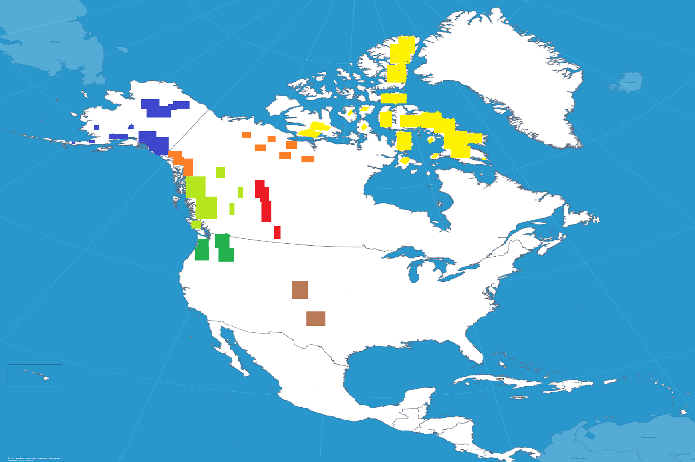

The cryosphere encompasses the parts of the world where water is frozen. This includes frozen water on land— ice sheets, glaciers, snow, and frozen ground (permafrost)— as well as sea ice, lake ice, and river ice.
Glaciers
Are slowly moving masses or river of ice formed by the accumulation and compaction of snow on mountains or near the poles
Ice Sheets
Are permanent layers of ice covering an extensive tract of land, especially a polar region
Snowpacks
Are masses of snow that have been compresssed and hardened by its own weight
We depend on the cryosphere for access to food, water, and shelter
How?
Food/Water
In Canada, one of the largest food sector exports is fish. Both the Fishing
and Agricultural industries reply on our cryospheres. If these areas melt, it
leads to nutrient leaching in the soil making it less habitable to certain crops.
Nutrient runoff from increased water levels also deposits more Phosphorus into the
water leading to eutriphication, and alterations to the water's turbidity. This destroys
the habitat for the fish living in surrounding areas.
Shelter
Costal settlements are also put at risk for floods and damage to the integrity of their infrastructures.
This means there is both and ecological and economic incentive to mitigate the negative impact we have on our environment and cryospheres.
Find out where Cryospheres are in North America!
Northwest Territories is home to many indigenous tribes including the Haida people. Many of these people reside in small coastal huts that are susceptible to damage via rising sea levels from the disappearance of the cryosphere. Inhabitants rely on fishing methods as a primary source of food. With yearly changes in the cryosphere, this affects the ecosystem that the fish live in which in turn impacts the livelihood of the individuals living in the area.